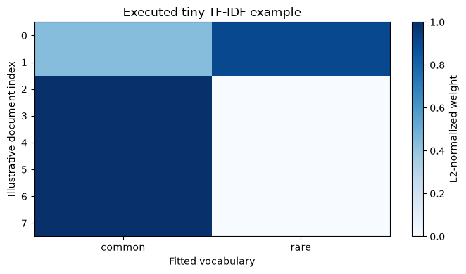

Versión en español. El código, los datos, las salidas calculadas y las etiquetas dentro de las figuras se conservan en su idioma original. Los cuadernos descargables están en inglés.
Lección 05 / Resultados ejecutados
Clasificación de texto: resultados
Capturados tras ejecutar correctamente el cuaderno proporcionado con datos sintéticos didácticos. Son resultados calculados, distintos de las ilustraciones conceptuales. En cada compilación del sitio se verifican los hashes del código fuente y del conjunto de datos.
Lee la explicación y sigue la implementación →
Qué observar Inspeccione la pequeña matriz TF-IDF ejecutada antes de leer los resultados con familias de plantillas reservadas. Los sondeos con mensajes nuevos ilustran el comportamiento; no son una estimación independiente de exactitud.
Figuras calculadas

Tablas y resultados impresos
1. Cargar los datos y mantener juntas las familias de plantillas · salida calculada
Loaded 480 tickets from 60 template groups.
1. Cargar los datos y mantener juntas las familias de plantillas · salida calculada
ticket_id category template_group \
0 T-0001 billing billing-template-01
1 T-0002 billing billing-template-01
2 T-0003 billing billing-template-01
text
0 My cloud backup statement lists $18.40 for sea...
1 My team plan statement lists $42.00 for storag...
2 My monthly storage statement lists $7.95 for t...1. Cargar los datos y mantener juntas las familias de plantillas · salida calculada
train : 320 rows; account_access=64, billing=64, order_status=64, refund_return=64, technical_issue=64 validation: 80 rows; account_access=16, billing=16, order_status=16, refund_return=16, technical_issue=16 test : 80 rows; account_access=16, billing=16, order_status=16, refund_return=16, technical_issue=16
1. Cargar los datos y mantener juntas las familias de plantillas · salida calculada
template_group category \
0 billing-template-01 billing
1 billing-template-01 billing
2 billing-template-01 billing
3 billing-template-01 billing
text
0 My cloud backup statement lists $18.40 for sea...
1 My team plan statement lists $42.00 for storag...
2 My monthly storage statement lists $7.95 for t...
3 My pro account statement lists $63.20 for the ...2. TF-IDF como vector disperso ponderado · salida calculada
shape: (320, 598)
sparse type: csr_matrix
density: 0.03517454013377926
norms of first three rows: [1. 1. 1.]
{'lowercase': True, 'strip_accents': None, 'ngram_range': (1, 1), 'stop_words': None, 'token_pattern': '(?u)\\b\\w\\w+\\b', 'use_idf': True, 'smooth_idf': True, 'sublinear_tf': False, 'norm': 'l2'}2. TF-IDF como vector disperso ponderado · salida calculada
manual smoothed IDF: 2.09861228866811 scikit-learn stored IDF: 2.09861228866811 ubiquitous term IDF: 1.0
2. TF-IDF como vector disperso ponderado · salida calculada
vocabulary columns nonzero density first-row L2 norm option default 598 0.0352 1.0000 min_df=2 431 0.0476 1.0000 unigrams+bigrams 1859 0.0231 1.0000 max_features=40 40 0.2727 1.0000 sublinear_tf=True 598 0.0352 1.0000 norm=None 598 0.0352 16.2972 smooth_idf=False 598 0.0352 1.0000
2. TF-IDF como vector disperso ponderado · salida calculada
count: common count: rare 0 1 1 1 1 1 2 1 0 3 1 0 4 1 0 5 1 0 6 1 0 7 1 0
2. TF-IDF como vector disperso ponderado · salida calculada
common 1.000000 rare 2.098612 Name: IDF, dtype: float64
2. TF-IDF como vector disperso ponderado · salida calculada
common rare 0 0.4302 0.9028 1 0.4302 0.9028 2 1.0000 0.0000 3 1.0000 0.0000 4 1.0000 0.0000 5 1.0000 0.0000 6 1.0000 0.0000 7 1.0000 0.0000
2. TF-IDF como vector disperso ponderado · salida calculada
Cosine(document 0, document 2): 0.430165282498796
4. Elegir la regularización en validación y probar una sola vez · salida calculada
C macro_f1 0 0.05 0.542456 1 0.20 0.540300 2 1.00 0.549523 3 5.00 0.523175 4 20.00 0.512367
4. Elegir la regularización en validación y probar una sola vez · salida calculada
Selected C using validation macro-F1: 1.0
4. Elegir la regularización en validación y probar una sola vez · salida calculada
test accuracy: 0.675
test macro-F1: 0.6715063520871143
most-frequent baseline accuracy: 0.2
most-frequent baseline macro-F1: 0.06666666666666667
precision recall f1-score support
account_access 0.53 0.50 0.52 16
billing 1.00 0.94 0.97 16
order_status 0.69 0.56 0.62 16
refund_return 0.64 0.88 0.74 16
technical_issue 0.53 0.50 0.52 16
accuracy 0.68 80
macro avg 0.68 0.68 0.67 80
weighted avg 0.68 0.68 0.67 80
4. Elegir la regularización en validación y probar una sola vez · salida calculada
predicted: account_access predicted: billing \
actual: account_access 8 0
actual: billing 0 15
actual: order_status 7 0
actual: refund_return 0 0
actual: technical_issue 0 0
predicted: order_status predicted: refund_return \
actual: account_access 1 0
actual: billing 1 0
actual: order_status 9 0
actual: refund_return 2 14
actual: technical_issue 0 8
predicted: technical_issue
actual: account_access 7
actual: billing 0
actual: order_status 0
actual: refund_return 0
actual: technical_issue 85. Analizar errores y coeficientes · salida calculada
26 errors among 80 held-out rows.
5. Analizar errores y coeficientes · salida calculada
ticket_id template_group actual/predicted \
3 T-0060 billing-template-08 billing -> order_status
24 T-0137 account_access-template-06 account_access -> technical_issue
25 T-0138 account_access-template-06 account_access -> technical_issue
26 T-0139 account_access-template-06 account_access -> technical_issue
27 T-0140 account_access-template-06 account_access -> order_status
28 T-0141 account_access-template-06 account_access -> technical_issue
29 T-0142 account_access-template-06 account_access -> technical_issue
30 T-0143 account_access-template-06 account_access -> technical_issue
31 T-0144 account_access-template-06 account_access -> technical_issue
40 T-0249 technical_issue-template-08 technical_issue -> refund_return
41 T-0250 technical_issue-template-08 technical_issue -> refund_return
42 T-0251 technical_issue-template-08 technical_issue -> refund_return
text
3 I was billed a second workspace after removing...
24 The one-time code arrives after it has already...
25 The one-time code arrives after it has already...
26 The one-time code arrives after it has already...
27 The one-time code arrives after it has already...
28 The one-time code arrives after it has already...
29 The one-time code arrives after it has already...
30 The one-time code arrives after it has already...
31 The one-time code arrives after it has already...
40 Keyboard shortcut Ctrl+K used to open search, ...
41 Keyboard shortcut Alt+Enter used to open calen...
42 Keyboard shortcut Ctrl+Shift+P used to open up...5. Analizar errores y coeficientes · salida calculada
account_access: terms most associated with its logit
[('sign', np.float64(1.765)), ('access', np.float64(1.349)), ('to', np.float64(1.234)), ('example', np.float64(1.177)), ('as', np.float64(1.153)), ('test', np.float64(1.138)), ('my', np.float64(1.062)), ('form', np.float64(1.0))]
terms lowering its logit: [('order', np.float64(-0.542)), ('of', np.float64(-0.525)), ('00', np.float64(-0.523)), ('return', np.float64(-0.5)), ('invoice', np.float64(-0.469))]
billing: terms most associated with its logit
[('invoice', np.float64(1.879)), ('00', np.float64(1.379)), ('month', np.float64(0.984)), ('card', np.float64(0.981)), ('cycle', np.float64(0.978)), ('team', np.float64(0.89)), ('uses', np.float64(0.836)), ('bill', np.float64(0.836))]
terms lowering its logit: [('return', np.float64(-0.616)), ('has', np.float64(-0.601)), ('refund', np.float64(-0.599)), ('to', np.float64(-0.543)), ('delivery', np.float64(-0.514))]
order_status: terms most associated with its logit
[('delivery', np.float64(1.771)), ('order', np.float64(1.591)), ('tracking', np.float64(1.534)), ('from', np.float64(1.351)), ('is', np.float64(1.191)), ('arrival', np.float64(1.186)), ('or', np.float64(1.153)), ('has', np.float64(1.13))]
terms lowering its logit: [('00', np.float64(-0.552)), ('refund', np.float64(-0.523)), ('return', np.float64(-0.521)), ('and', np.float64(-0.491)), ('card', np.float64(-0.464))]
refund_return: terms most associated with its logit
[('return', np.float64(2.137)), ('refund', np.float64(2.056)), ('send', np.float64(1.257)), ('product', np.float64(1.221)), ('wrong', np.float64(1.124)), ('returned', np.float64(1.089)), ('item', np.float64(1.085)), ('would', np.float64(1.059))]
terms lowering its logit: [('in', np.float64(-0.88)), ('says', np.float64(-0.808)), ('from', np.float64(-0.617)), ('my', np.float64(-0.596)), ('has', np.float64(-0.497))]
technical_issue: terms most associated with its logit
[('whenever', np.float64(1.208)), ('text', np.float64(1.123)), ('with', np.float64(1.046)), ('since', np.float64(0.972)), ('app', np.float64(0.928)), ('exported', np.float64(0.801)), ('opens', np.float64(0.801)), ('file', np.float64(0.801))]
terms lowering its logit: [('is', np.float64(-1.086)), ('my', np.float64(-0.866)), ('but', np.float64(-0.778)), ('says', np.float64(-0.724)), ('can', np.float64(-0.677))]5. Analizar errores y coeficientes · salida calculada
Stored nonzeros: [4 0]
5. Analizar errores y coeficientes · salida calculada
account_access billing order_status \
Please help me reset my password 0.422 0.189 0.142
zzzzunseenword987654321 0.164 0.221 0.154
refund_return technical_issue
Please help me reset my password 0.123 0.124
zzzzunseenword987654321 0.178 0.283Entorno de ejecución y procedencia
{
"python": "3.12.10",
"numpy": "2.5.4",
"pandas": "2.3.3",
"scikit_learn": "1.9.1",
"xgboost": "3.4.1"
}Hashes de origen y manifiesto de resultados